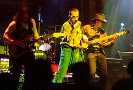
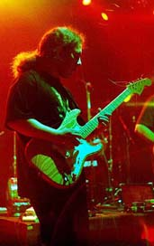

Частное мнение.
Впечатления от фестиваля BLUES.RU-2001
Фестивалю еще до его открытия
сопутствовали разнообразные неприятности.
Началось с того, что одному из музыкантов
группы JAM неожиданно пришлось лечь в
больницу за неделю до фестиваля. А очень
жаль! Помимо искреннего личного сочувствия
подобным обстоятельствам, жаль, что группа
не смогла выступить. Для меня, к примеру, это
могло бы быть одним из самых интересных
номеров, поскольку группа нечасто навещает
Москву, а то немногое, что я слышал раньше,
мне очень нравилось. Следующим ударом был
выход из борьбы хедлайнера Сергея Воронова,
который был заявлен в афише на первой
позиции, но за день до фестиваля
простудился.
Ну, а самое сильное "впечатление" я
получил, когда приехал к началу концерта в
семь часов к клубу "Точка". Там я застал
толпу народа у входа, которую внутрь не
пускали. Оказалось что за пару часов до
фестиваля произошел какой-то пожар, и клуб
был полностью обесточен. Подобные аварии
быстро не устраняются, как я представлял
себе, исходя из общих представлений о жизни.
Перед глазами маячила безрадостная
перспектива, а также мысль о том, что
подобная случайность способна самым
неожиданным образом подкосить два месяца
орг.деятельности. Самая нестойкая
небольшая часть публики, негромко ругаясь,
отправилась в сторону метро. Однако
охранники с уверенностью в голосе
отправляли всех от входа с тем, чтобы они
возвращались в 8 часов. Это вселяло надежду,
поскольку означало, что к восьми они, может
быть, смогут все починить. И действительно,
вовремя приехал дизель, который неизвестно
где и как раздобыли, и он трудился до 4-х утра
весь первый день фестиваля, обеспечивая все в клубе
"Точка" - от пульта
звукорежиссера до автомата, разливающего
пиво - электричеством. Таким образом, все обошлось, и
фестиваль начался, хоть и с опозданием.
Теперь напишу понемногу о музыкантах,
которых я послушал, и о которых мне хочется
что-то сказать.
The Way из Питера представляет собой
гитарное трио, репертуар которого
составляет практически без исключения
музыка SRV, размешанного с очень родственным
Хендриксом. К чести гитариста нужно
признать, что он довольно точно
воспроизводит гитарную партию Стиви Вона с
известных записей, хотя, конечно, пытаться
кого-нибудь сравнивать я не буду. Результат
получается довольно интересный, в Москве
такой попытки "аутентичного"
воспроизведения SRV от испорченных не всегда
оправданными изысками музыкантов не
услышишь. Немного портит картину все-таки
недостаточная опытность группы, а также
слишком прямое подражание оригиналу в
ущерб импровизации. Хотя в целом группа -
интересная.

Blackmailers Blues Band из Владимира представляют
собой гитарный квартет с гитарой Алексея
Барышева и вокалистом-шоуменом, имени
которого я не знаю, к сожалению. Барышев
играет в уже ставшей классической
стратокастерной манере весьма забойно и
профессионально. Вокалист поет очень
хриплым голосом и имеет "крутой" вид
благодаря бородке, полу-лысой голове и
взгляду поверх черных очков. К тому же,
общается с публикой в демонической манере
тем же супер-хриплым голосом, давая понять,
что и музыканты, и публика - все очень крутые
парни. Перманентно-забойное соло на гитаре
тоже вполне соответствует этой установке,
хотя и само по себе звучит вполне
убедительно. Выступление мне понравилось,
однако идея "мочить" со всей силы на гитаре
на всем протяжении концерта приводит к
некоторой однообразности. Все-таки, помимо
крутизны в конце квадрата, в блюзе должны
быть фишки, которые можно сыграть и вполне "спокойным
голосом". А "крутизна" - не самая главная
черта блюза, хотя пойди объясни это
неподготовленному провинциальному
слушателю, половина которого воспринимает
блюз в качестве сувенира, от которого ждет
некоторых непременных атрибутов. Вот и
приходится музыкантам загибать в подобную
крутую сторону.
Blues Cousins и Ливан Ломидзе выступили в своей
классической манере - забойно, искрометно и
весело. Можно долго обсуждать соответствие
блюзовому оригиналу Ливановских
аранжировок на 78 оборотов, однако этот путь,
на мой взгляд, - непродуктивный. Ливан в
интервью сам признается, что у него своя
манера интерпретации блюзовых стандартов.
Как говорит Ливан почти перед каждой песней:
"а теперь самый быстрый блюз..." Поэтому,
если принять это как данность, то результат
получается очень веселый. Супер-виртуозная
отшлифованная техника Ливановской игры,
которая способна сразить наповал особенно
неподготовленного человека,
сопровождается отличным шоу. Ливан, который
очень много и успешно выступает (до 20
концертов в месяц), умеет великолепно
наладить контакт с залом и получать вместе
с ним истинное неподдельное удовольствие.
Вообще, следует признать, что Ливан на
данный момент является наиболее "профессиональным"
исполнителем на московской блюзовой сцене.
У него наиболее отработанный репертуар, шоу,
отточенная техника и умение организовать
собственные концерты. И на фестивале
выступление Blues Cousins было очень удачным,
вероятно, благодаря тому, что замечательная
публика, которая по составу выгодно
отличалась от контингента среднего
питейного заведения, взаимно разогрелась
вместе с музыкантами.
Бывалый блюзовый гитарист Борис Булкин и
Stainless Blues Band выступали по обыкновению с
замечательным гармонистом Ромой Гегартом.
Булкин, который в первую очередь бросается
в глаза своими большими измерениями (посмотрим
правде в глаза), на фестивале
появился с удивительной гитарой мизерного
размера. На гитаре не было головки грифа, а
дека была ровно такой величины, чтобы на ней
помещалась машина и звукосниматели.
Выглядело в сочетании - обалденно, при
этом звучала гитара очень хорошо.
Экстравагантная внешность, но без
компромисса с качеством звучания. Булкин -
один из самых сильных наших блюзовых
гитаристов. Его стилистически иногда тянет
в более тяжелые пред-роковые формы, однако
Булкин, для блюза - слава Богу, спускает рок-н-ролльный
пар в группе "Вольный Стиль" (чем она хуже ZZ Top?).
В результате, на (слабую) долю Stainless Blues Band
остаются почти чисто блюзовые гитарные
партии. Выступление получилось отменным,
Булкин классно играл на полную катушку,
поскольку чувствовал, что его внимательно
слушают. Гегарт был в отличной физической
форме и проявил разнообразные стороны
своего таланта.

Группа "Серебряный рубль", помимо ритм-секции,
состоит из двух гитаристов - бессменного
лидера Алика Микояна и бывшего соратника
Гегарта по King Biscuit - Димы Красивова. Микоян
играет на телекастере специального
слайдового строя. Причем не всегда слайдом.
Соответственно, в этой нестандартной
аппликатуре он освоил большое количество
блюзовых и (с приставкой) ритм-энд-блюзовых
стандартов. Группа "Серебряный Рубль" -
довольно старая, и за ней довольно прочно
укрепился определенный стандарт качества.
Дима Красивов - моложе остальных и появился
в группе относительно недавно. Однако, он
очень удачно вписался в ансамбль, поскольку
весьма блюзово образован и способен играть
отличную аккомпанирующую партию, после
чего свингованное или супер-лирическое
соло, к примеру, как в хите Jumpin’ at Shadows.
Однако отсутствие практики из-за очень
редких концертов сыграло свою роль,
выступление было не совсем удачным, если
сравнивать его с предыдущими концертами
"Серебрянного Рубля". Особенно оригинальным
образом это отразилось на гитарной партии
Красивова. Дело в том, что его игру еще со
времен King Biscuit ценят за качество
импровизации, которая бывает относительно
медленная по темпу (по сравнению с многими
другими гитаристами), однако очень "осмысленная",
т.е. не допускает проходных заполняющих
кусков или случайных "ленивых" нот.
Недостаточная разыгранность на концерте
приводит к тому, что Дима может сбиваться
или попросту пропускать ноты, если
музыкальная мысль не поспевает за темпом
произведения. Однако, внутренний "контроль
качества" не позволяет в этих случаях
использовать какие-то случайные
заполняющие последовательности для
обеспечения бесперебойности звучания. Ну
что ж, остается только искренне пожелать
побольше концертов этой замечательной
группе, которая, я надеюсь, еще не раз
выступит на полную катушку, а мы их с
удовольствием послушаем.
Big Blues Revival - группа из Питера, исполняющая
по словам конферансье Мишуриса очень
аутентичный блюз. До фестиваля я слышал
только одну песню в их исполнении - "Smoke On The
Water" известной супер-группы. Эта песня, хоть
и исполненная оригинально и супер-нетрадиционно,
дала мне неправильное изначальное
представление об их стилистической
направленности. Однако, как оказалось,
теперь я вполне готов
согласиться с Мишурисом. Группа - довольно молодая и
большая по составу: помимо ритм-секции,
состоит из двух гитаристов, мандолины (!) и
вокалиста. Вокалист-фронтмен Виталий
Андреев с большой бородой, в бейсболке и
роговых очках поет замечательным очень
хриплым голосом в стиле Хаулин Вульфа,
например. При этом голос никогда
окончательно не срывается в хрип (в отличие
от некоторых), а все-таки всегда остается
пением. Меня тоже подмывает назвать эту
довольно колоритную, но скромную, вокальную
манеру словом "аутентично" (что бы это ни
значило). Группа играет, главным образом,
стандарты из репертуара Вилли Диксона,
Мадди Уотерза и Хаулина Вульфа. Т.е.
репертуар вполне показывает, на какую
музыку равняется группа. И мне кажется, это
им вполне удается. Несмотря на некоторую
нестопроцентную сыгранность, которую можно
объяснить отсутствием опыта ( или иными
причинами, например, такими, как вторичное
последствие волнения перед выступлением....),
группа демонстрирует очень правильный, на
мой взгляд, подход к блюзовой музыке. И со
слабой долей у них все в порядке, в отличие,
от некоторых супер-дупер блюзменов,
занимающих у нас первые места. В этом ключе
Big Blues Revival милее моему сердцу как группа,
которая, может быть, не является на данный
момент самым профессиональным коллективом,
но замешана на правильных корнях, нежели
группа, которая играет очень давно и гладко,
но в самом начале обучения упустила что-то
главное в блюзе. Хотя я не хочу полностью
противопоставлять профессионализм и
правильный замес. У этого сравнения есть и
другие стороны - например, бывают группы
отвратного качества звучания, которые, при
этом, и смысла блюза совсем не понимают. А
бывает - и с точностью до наоборот.
Ваня Жук - гитарист из Питера - выступал с
Вовой Кожекиным на гармошке и с его группой.
Сам формат композиций выбран довольно
вызывающий для консервативного
московского блюзового "истеблишмента" -
блюзы по-русски. Меня, честно говоря,
подобный подход не вдохновляет, даже
несмотря на его своеобычность. Со мной
можно не согласиться, не буду спорить. Для
меня главный вопрос - зачем? Ну да ладно, не
буду вмешиваться. Но, независимо от языка, само выступление,
особенно в части гитарной партии Жука, мне
очень понравилось. Супер! Сквозь
прокрустово ложе нетрадиционного
русскоязычного блюза прорывалось
нешуточное умение Жука играть обычный блюз
на гитаре. Какие-то мощные куски соло на
полуаккустике, иногда - какие-то
нетривиальные мелодические линии. Одним
словом, очень хотелось бы послушать его на
гитаре еще и побольше, но в более привычном
обрамлении. На мой взгляд, в традиционном
блюзе есть достаточно большое количество
интересных фишек, на которых можно очень
серьезно поимпровизировать и раскрыть свой
гитарный талант, нежели в заигрывании
русский-английский. Однако, несмотря на то,
что я тут неадекватно прицепился к языку
выступления, результат, особенно в гитарной
части, мне очень понравился и впечатлил.
Робин Харп - гармонист из Канады,
обитающий последние пару месяцев в Москве,
выступал с группой, набранной из местных
музыкантов, которых, однако, нельзя было
раньше встретить в московской блюзовой
тусовке. Как пример - седовласый гитарист
Валерий Гилюта, по чьему-то выражению "легендарный",
вполне умеющий играть блюз. Но в последние
годы он в блюзовом качестве на виду не
выступал, а практиковал, вероятно, дома. (Если
я, конечно, не ошибаюсь.) Робин Харп с
группой долго настраивался и в результате
устроил замечательное блюзовое шоу,
которое свидетельствует о
профессиональных навыках, приобретенных
там, где блюз - не такая редкая (в удельном
отношении) музыка, как у нас. Видно, что его
блюзовый язык более разработан, он
исполняет какие-то общепринятые "там"
музыкальные фишки и т.д. Это говорит о том,
что блюз на его родине звучит постоянно и в
больших количествах, музыканты слушают
друг друга, передразнивают и обмениваются
опытом. Одним словом, остается только
позавидовать. Однако, мне НЕ показалось, что
с музыкальной точки зрения Робин Харп на
голову превзошел наших музыкантов.
Вспоминая о его стандартном номере -
закинуть свою великолепную шляпу куда-подальше
(причем, что удивительно, она каждый раз
возвращалась обратно), хочется сказать: "Наших
шапками не закидаешь!".
Гитарист Дмитрий Казанцев, игравший
когда-то в легендарной Cry
Baby, открыл со своей группой Dr.Nick второй день
фестиваля. Группа стала особенно интенсивно
играть в Москве по клубам в последние
несколько месяцев. Его выступление
продемонстрировало замечательные блюзовые
навыки и звучало очень качественно.
Стилистически на этом концерте Dr.Nick
тщательно уклонялся от "кондовых" форм
блюза, как потом выяснилось в личной беседе
- вполне сознательно. Но, при этом, класс
группы чувствовался. Фанки в конце
выступления было бесподобным. Однако, в
середине меня ввел в некоторое недоумение
выбор не совсем блюзовых композиций от
вполне блюзовых авторов. И я от этого
немного заскучал, поскольку мой личный
интерес к музыке лежит, по большей части, в
чисто блюзовой гармонии, с какими-то
вариациями уже в этих рамках. Как говорит
сам Казанцев, они прекрасно владеют и много
исполняют чисто блюзового репертуара.
Просто, вероятно, мне для полного
собственного удовлетворения надо было бы
попасть на другой концерт группы Dr.Nick'а.
 Михаил Мишурис,
замечательный
конферансье фестиваля, не так давно собрал
новую группу, а точнее - не группу, а целый
Mishouris & His Swinging Orchestra. По его собственным
словам, несмотря на название, Мишурис не
является главным в ансамбле. Оркестр,
помимо Миши, состоит из нескольких очень
ярких исполнителей. А главная заслуга
Мишуриса, на мой взгляд, не только в
качественной вокальной партии, а в том, что
он собрал вокруг себя очень интересных
музыкантов, благодаря отличному вкусу, а
также "правильным" музыкальным
устремлениям. Группа, в основном, исполняет
репертуар Луиса Джордана (кстати, очень
любимого мною исполнителя), а также
некоторые хиты от Хаулина Вульфа и других
мастеров традиционного черного блюза,
однако, в своих необычных "оркестровых"
интерпретациях, не теряющих в то же время
связи с оригиналом. Состав оркестра
относительно большой: ударные, контрабас,
клавиши, кларнет, гитара и голос. Причем, что
самое интересное, до фестиваля они успели
выступить публично только три раза. Этому
предшествовало некоторое количество
домашних репетиций. А, кроме того, за этот
небольшой период они успели как бы между
делом выпустить демо-запись, которая, как
оказалось, сама по себе обладает большими
достоинствами. Не все еще получается гладко,
есть шероховатости, но мне вполне понятно,
что со временем они отрепетируют и
сыграются еще лучше, а результат будет еще
более замечательным.
Михаил Мишурис,
замечательный
конферансье фестиваля, не так давно собрал
новую группу, а точнее - не группу, а целый
Mishouris & His Swinging Orchestra. По его собственным
словам, несмотря на название, Мишурис не
является главным в ансамбле. Оркестр,
помимо Миши, состоит из нескольких очень
ярких исполнителей. А главная заслуга
Мишуриса, на мой взгляд, не только в
качественной вокальной партии, а в том, что
он собрал вокруг себя очень интересных
музыкантов, благодаря отличному вкусу, а
также "правильным" музыкальным
устремлениям. Группа, в основном, исполняет
репертуар Луиса Джордана (кстати, очень
любимого мною исполнителя), а также
некоторые хиты от Хаулина Вульфа и других
мастеров традиционного черного блюза,
однако, в своих необычных "оркестровых"
интерпретациях, не теряющих в то же время
связи с оригиналом. Состав оркестра
относительно большой: ударные, контрабас,
клавиши, кларнет, гитара и голос. Причем, что
самое интересное, до фестиваля они успели
выступить публично только три раза. Этому
предшествовало некоторое количество
домашних репетиций. А, кроме того, за этот
небольшой период они успели как бы между
делом выпустить демо-запись, которая, как
оказалось, сама по себе обладает большими
достоинствами. Не все еще получается гладко,
есть шероховатости, но мне вполне понятно,
что со временем они отрепетируют и
сыграются еще лучше, а результат будет еще
более замечательным.
Показателем нынешнего качества вполне
может послужить тот факт, что звуки "Каледонии", а также и других исполняемых
Мишурисом бодрых композиций, неудержимо
потянули на сцену наших ведущих
гармонистов, у которых на тот момент (по
воле обстоятельств) разумная часть натуры
находилась в спящем сомнамбулическом
состоянии, отпразновавши блюзовый пир духа,
царивший на фестивале. А глубокий
музыкальный инстинкт, который не пропьешь,
четко направил их в правильном направлении
- на сцену, откуда доносились доселе
неслыханные свинговые зажигательные звуки.
Теперь напишу немного об отдельных
музыкантах очень понравившегося мне
оркестра.
Молодой гитарист Мишуриса - Вадим
Иващенко из Ростова поразил меня больше
всех на этом фестивале. Он играет на обычном
стратокастере пальцами без медиатора, что
скорее всего объясняется историческими
причинами, а не специальным осмысленным
выбором. Поначалу его игра не очень
выделялась, даже была не очень уверенной,
вероятно, от некоторого волнения. Однако,
потом, когда группа всерьез разыгралась, и
дело дошло до гитарных соло, меня поразили
его импровизации. Видно, что человек давно и
серьезно любит блюз, в частности, свинговую
его составляющую и хорошо в ней разобрался.
Помимо четкого "взрослого" блюзового
акомпанимента (исполняемого пальцами!),
меня поразили нетривиальные музыкальные
линии и фразы в импровизации, что я, честно
говоря, люблю в музыке больше всего. Такие
вещи лежат в области моего горячего
блюзового интереса. Одним словом, мне все
это очень понравилось, жду - не дождусь,
когда послушаю Оркестр и сверх-гитариста в
следующий раз.
Сергей Шитов - исполнитель на кларнете -
пришел в московскую блюзовую тусовку с
отличным джазовым образованием, настоящим
умением импровизировать, а также тонким
чутьем музыки с джазово-блюзовыми корнями.
Он стал большим энтузиастом блюзового дела
и играет сразу в нескольких ансамблях, в чем-то
помогая им своим джазовым опытом. Причем,
что хочется особенно отметить? Я слышал
выступления Шитова с блюзовыми
коллективами некоторое время назад. Тогда,
мне казалось, Сергей еще недостаточно
сжился и внутренне принял "блюзовые
правила игры". Т.е. то, что отличает блюз от
джаза, и иногда является поводом для
претензий джазменов, не до конца понимающих
это отличие и, следовательно, смысл
блюзовой музыки. В блюзе, в отличие от джаза,
фиксируются более простые гармонические
рамки, а также формы импровизации, в которых
отсутствует намеренное математически-гармоническое
усложнение. Упор делается на большую
эмоциональность импровизации, богатое
звукоизвлечение, а также вычерпывание
почти до конца возможностей,
предоставляемых данной гармонической
последовательностью или, к примеру,
свинговой темой. Как результат,
неподготовленный хороший джазмен, попавший
в блюзовую компанию, переусложнит свою
партию в неправильном направлении, сыграет
вразрез с группой, а на третьей композиции
потеряет интерес к самому процессу. Шитов,
на мой взгляд, демонстрирует со временем
все большую гармонию с блюзовой манерой
игры, привнося в нее свой очень ценный для
нашего блюза джазовый багаж, что крайне
благотворно сказывается на общем
результате.
Николай Второв - контрабасист с громкими
заслугами, по слухам, был одним из
инициаторов выбора нынешнего музыкального
направления оркестра Мишуриса. В нем течет
горячая рокабильная кровь еще со времен
Бриолиновой Мечты. Причем рокабильные
идеалы Второва совместно с прогрессивной
американской музыкальной мыслью
трансформируются в любовь к нео-свингу и
прочим родственным вещам. Только в
последние несколько лет оказалось, хотя бы
на примере Брайана Зетцера, что свинг, песни
Фрэнка Синатры с оркестром, а также угарное
рокабилли очень хорошо друг с другом
сочетаются. Вся Америка помешана на новом
стиле под старым названием "свинг", который,
правда, заметно отличается от
классического джазового понятия. Новый
проект, душевно близкий Николаю по стилю,
как мне кажется, доставляет Второву большое
удовольствие, что, естественно, хорошо
отражается на его игре. После Blues Hammer Band,
который, на мой взгляд, своим форматом не
давал ему развернуться в рамках любимого
стиля, у Мишуриса Второв чувствует себя
очень хорошо.
Mishouris & His Swinging Orchestra появились как-то
внезапно, и сразу оказалось, что они очень
хорошо играют. На фестивале они выступали и
в первый, и во второй день, поскольку 19-го
они вышли на замену выбывшим игрокам. По
всеобщему мнению, пара их относительно
коротких выступлений была гвоздем
программы фестиваля. Что же, пожелаем им
творческих успехов, а сами будем с
интересом следить за их дальнейшей судьбой
и посещать клубные концерты.
Если как-то попытаться обобщить свои
впечатления от всего фестиваля, то
необходимо сказать следующее. Фестиваль
мне очень понравился. Прежде всего тем, что
практически все музыканты играли на полную
катушку. В первую очередь из-за того, что они
почувствовали обратную связь со зрителями,
которые пришли не просто пообедать под
модную музыку в ресторане, как это обычно
бывает на ординарных концертах, а
внимательно послушать, что же все-таки
данная группа может хорошего сыграть.
Мобилизовало музыкантов еще и большое
количество авторитетов в зале из числа
любителей блюза и его исполнителей. К
сожалению, в последнее время количество клубов, в которых собирались бы именно
ценители блюзовой музыки, а не просто
случайные посетители, несколько
подсократилось. На мой взгляд, одной из
главных причин блюзового бума в Москве в 95-97
годах было наличие таких клубов, как
Беляево или Арбат Блюз Клуб, где музыканты
могли много играть, а их внимательно
слушали взыскательные любители блюза, что
придавало особую осмысленность процессу
музицирования. Очень надеюсь, что фестиваль
в качестве некоторого старта поможет
возродить эту традицию.
Другая идея фестиваля - собрать
музыкантов со всех городов, а не только из
Москвы, на мой взгляд, тоже достигла своей
цели, и это привело к своим положительным
результатам. Помимо простого знакомства и
открытия того факта, что не только в столице
блюз играют, а, например, и в Питере, сами
музыканты получили возможность посмотреть
друг на друга, оценить свои достижения и
чему-то друг у друга поучиться. Я лично
узнал о существовании нескольких
интересных питерских групп. Питерские
блюзмены вынули "питерскую фигу" из
кармана, посмотрев на некоторых
действительно профессиональных московских
музыкантов. Московские, возможно, научились
более простому подходу, в частности, к
выбору репертуара, практикуемому в Питере.
Блюзмены из Владимира, надеюсь, поняли, что
столичных одной крутизной не возьмешь и т.д.
Кроме того, когда различные музыканты
выступают рядом, есть возможность
адекватно оценить, кто играет интересней, а
кто был слишком переоценен поклонниками
или самим собой. И т.д. и т.п.
И еще по поводу общего качества "музыкального
материала", который довелось послушать на
фестивале. Уровень групп очень различался,
поскольку на фестиваль были собраны без
какого-то жесткого отбора почти все
музыканты, играющие в нашем стиле. Были и
очень профессиональные музыканты, и
довольно молодые группы, еще относительно
плохо сыгранные. Подходящий для такой
ситуации формат фестиваля - 30 минут на
группу - не давал заскучать даже в случае
совсем неудачного номера. Для меня очень
важным критерием оценки музыкантов, помимо
наличия природного таланта, было
стремление сыграть хорошо. А как
показывает опыт, от того, насколько
серьезно музыкант относится к публике и
своему выступлению, очень и очень сильно
зависит конечный результат. В этом смысле
фестиваль меня очень порадовал и не
доставил мне никаких разочарований. Могу
сказать обо всем этом только хорошее.
Итак, на мой взгляд, фестиваль BLUES.RU-2001 в
целом оказался очень удачным. Все в конце
концов получилось и в организационном
плане, поэтому в следующем году вполне
можно ожидать фестиваля BLUES.RU-2002. Long live the Blues!
Федор Романенко, 03.05.2001
(Фото Михаила Бирюкова)
Российские музыканты